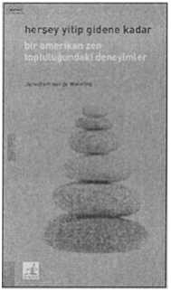

'Herşey yitip gidene kadar.' Bu sözcüğü tekrarla, demişti yaşlı usta. Denedim ve zaman yitip gitti. Çan tekrar çaldı, bir yirmibeş dakika daha geçti. Japonya'da keşişler bana Zendo’da zaman olmadığını söylediklerinde asla onlara inanmak istememiştim. Bunu yaşlı keşişler söylüyordu. Genç keşişler zaman hakkında herşeyi biliyordu, jikki’nin ucuz çalar saatinde yavaş yavaş tıklayarak geçip gidiyordu zaman. Japonya'da eğer uyumamışsam veya şu ya da bu düşe dalıp gitmemişsem dakikaları sayardım.
Zaman işkenceydi. Fakat şimdi zaman yoktu. Sonu gelmemecesine kaynayan düşünceler garip bir şekilde kaybolmuştu. Her halükarda mucizeler oluyordu.
İlk romanı 'Boş Ayna'da yaşamın anlamını bulmak için gittiği Japonya'daki bir Zen tapınağında yaşadıklarını anlatan Janwillem van de Wetering bu kez Amerika’da bir Zen topluluğuna katılıyor. Budizm üstüne ikinci ve son romanım dediği bu kitapta Amerika'daki deneyimlerini yine kendine özgü derin bir bakış açısıyla aktarıyor bizlere.